경력과 작업물
경력과 작업물 모아보기
2009년부터 15개 회사에서 만든 것들을 시간순으로 모았습니다. 항목을 열면 맡은 일이 보이고, 가능한 곳은 당시 작업물 화면도 함께 볼 수 있습니다.
- 15년실무 경력
- 15개근무한 회사
- 54장작업물 화면
- 6개 산업금융 · 커머스 · 게임 · 포털 · 언론 · 에이전시
시간순
경력 타임라인
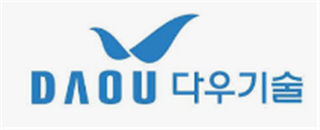
㈜ 다우기술
웹서비스팀 · 책임 · 금융Vue 3 퇴직연금 서비스의 프론트 구조를 설계하고 개발을 주도
2025년 07월 ~ 2026년 12월 (계약종료일)
핵심
- 컴포저블·세션스토리지 기반 상태 관리와 공통 로직 설계
- 버튼·테이블·모달·툴팁 등 공통 UI 컴포넌트의 재사용 구조 구축
- Dart Sass + BEM 스타일 구조, AgGrid·Highcharts 데이터 UI 구현
상세 업무 보기
Vue 3 기반 Front-End 구조 설계 및 개발 주도
- Vue 3 + JavaScript 기반 환경에서 컴포넌트 중심 Front-End 개발 수행
- 컴포저블(Composable), 세션스토리지 등 상태 관리 및 공통 로직 유틸 설계·구현
- 화면 구조 설계부터 UI 개발까지 일관된 흐름으로 진행하여 개발 효율 향상
공통 UI 컴포넌트 설계 및 재사용 구조 구축
- 버튼, 배지, 테이블 등 주요 UI 요소를 컴포넌트화하여 재사용성 강화
- 모달, 툴팁, 다이얼로그 등 인터랙션 기반 컴포넌트 설계 및 기능 구현
- 컴포넌트 단위 조건 처리 및 상태 분기를 통해 확장 가능한 구조 설계
퍼블리싱 구조화 및 스타일 아키텍처 설계
- Dart Sass 기반 스타일 구조 설계 및 BEM 네이밍 적용
- UI 일관성 유지를 위한 스타일 가이드 및 구조 정립
- 퍼블리싱과 개발을 통합한 방식으로 작업하여 생산성 및 유지보수 효율 개선
데이터 기반 UI 및 외부 라이브러리 연동
- AgGrid, HighChart 등 데이터 중심 UI 컴포넌트 구현 및 커스터마이징
- 마크업/뷰어 계열 라이브러리 연동 및 화면 구성 적용
- 데이터 바인딩 및 화면 상태에 따른 동적 UI 처리 구현
㈜플그림
프론트개발팀 · 과장 · 커머스·포털Vue 3 + TypeScript SPA로 현대이지웰 차세대 시스템 화면 개발
2025년 01월 ~ 2025년 06월
핵심
- 페이지 템플릿과 공통 컴포넌트 구조 설계
- 웹 표준·접근성·반응형 퍼블리싱, SCSS 네이밍 컨벤션 정립
- Composition API 상태 관리와 REST API 연동 화면 구현
상세 업무 보기
Vue 3 기반 Front-End 구조 설계 및 UI 개발
- Vue 3 + TypeScript 기반 SPA 환경에서 컴포넌트 구조 설계 및 화면 개발
- 페이지 단위 템플릿 컴포넌트 구성 및 재사용 가능한 구조 설계
- 컴포넌트 단위 SCSS 설계로 UI 일관성 및 유지보수성 향상
모듈형 UI 컴포넌트 설계 및 퍼블리싱
- 웹 표준·접근성 및 반응형을 고려한 퍼블리싱 구현
- 공통 UI 컴포넌트 템플릿화로 재사용성 및 개발 효율 개선
- SCSS 네이밍 컨벤션 및 퍼블리싱 가이드 정립 및 적용
데이터 바인딩 및 API 연동 기반 기능 구현
- Vue Composition API 기반 상태 관리 및 데이터 바인딩 처리
- REST API 연동을 통한 UI 기능 구현 및 인터랙션 개발
- 서비스 요구사항 기반 화면 로직 구현 및 유지보수
삼성 R&D 캠퍼스
프론트개발팀 · 과장 · 커머스·포털삼성 글로벌 쇼핑몰(NSP)의 Vue 3 SPA와 데이터 시각화 컴포넌트 제작
2024년 10월 ~ 2025년 01월
핵심
- JavaScript 기반 Vue 3 SPA 구조와 상태 관리 설계
- 커스텀 차트·캘린더 등 데이터 시각화 컴포넌트 제작
- Git 협업 환경에서 퍼블리싱–개발 연동 전 과정을 주도
상세 업무 보기
Vue 3 기반 프론트엔드 개발 및 UI 퍼블리싱
- Vue 3 + JavaScript 기반의 SPA 구조 설계 및 UI 구현 전반 담당
- TypeScript 미사용 환경에서 JavaScript 기반으로 기능 구현 및 상태 관리 설계
- 기획서 기반 반응형 UI 설계, SCSS 컴포넌트 구조화, 웹 표준/접근성 적용
데이터 시각화 컴포넌트 개발
- 고도화된 비즈니스 데이터 시각화를 위한 커스텀 차트 및 캘린더 컴포넌트 제작
- 다양한 인터랙션 요구사항에 대응한 사용자 중심의 데이터 UI 구성
- Highcharts 및 자체 시각화 로직을 통한 비주얼 컴포넌트 최적화
퍼블리싱 및 프론트 통합 환경 셋업
- Git 기반 협업 환경에서 퍼블리싱-개발 연동 전 과정 직접 주도
- 컴포넌트 단위 SCSS 설계 및 재사용 가능한 UI 템플릿화
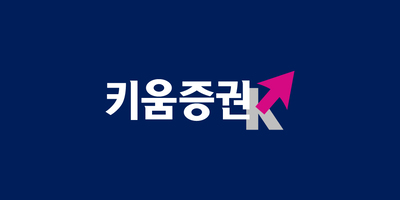
㈜키움증권
개발팀 · 차장 · 금융가상화폐 거래소(MTS/WTS)·영웅전 랭킹 등 금융 서비스 UI 구축, 퍼블파트 PL
2022년 04월 ~ 2024년 09월
핵심
- Gulp·SCSS·ES6 자동화 빌드와 모바일/PC UI 가이드·공통 컴포넌트
- Highcharts 기반 실시간 차트 인터랙션과 랭킹 시스템
- 마이크로 애니메이션, UI 구조의 Vue 컴포넌트 점진 전환
상세 업무 보기
가상화폐 거래소 웹서비스 구축 (MTS / WTS)
- SCSS 및 ES6 기반의 퍼블리싱 자동화 빌드 환경 구성 (Git 형상관리 적용)
- 모바일(MTS) / PC(WTS) 환경별 UI 가이드 수립 및 컴포넌트 구조 설계
- Vanilla JavaScript 기반 인터랙션 기능 구현 및 구조화
- SCSS 및 JavaScript 공통 컴포넌트화 및 모드별 변수 분리 적용
- UI 구조를 Vue 컴포넌트로 점진적 전환하여 유지보수성 향상
주식 수익률 랭킹 시스템 구축
- Gulp 기반 SCSS/ES6 자동화 빌드 환경 도입 및 적용
- MTS 기준 UI 가이드 작성 및 컴포넌트 단위 개발
- Highcharts 라이브러리 활용, 데이터 시각화 UI 커스터마이징 (formatter 처리 포함)
- 실시간 데이터 기반 차트 인터랙션 동작 설계 및 구현
영웅문S# 콘텐츠 운영
- 로보마켓(인공지능 기반 투자정보 서비스), 금융투자소득세 안내 사이트 등 운영형 UI 제작
- 기획안 기반의 페이지 구조화 및 컴포넌트화로 유지보수 용이성 확보
영웅문S# 영웅전 랭킹 시스템 개발
- WTS(PC Web) 중심의 UI 빌드 자동화 환경 구성 및 유지
- UI 가이드 기반 컴포넌트 단위 모듈 설계 및 SCSS/JS 통합 구조화
- Highcharts 기반 데이터 시각화 UI 구성 및 사용자 상호작용 로직 구현
인터랙션 및 마이크로 애니메이션 구현
- 사용자 경험을 고려한 동적 UI 요소 및 인터랙션 효과 설계
- 컴포넌트 단위 애니메이션, 모션 타이밍 조절 등 시각적 몰입도 향상
- PC/모바일 전환 시 브레이크포인트별 인터랙션 차별화 적용
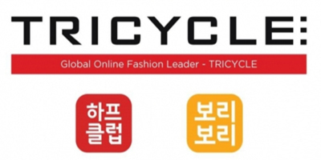
㈜트라이씨클
UI개발팀 · 과장 · 커머스·포털FO·BO·SCM 플랫폼 운영과 기획전 제작 약 75% 자동화, 퍼블파트 PL
2020년 05월 ~ 2022년 03월
핵심
- Angular·Vue 운영 사이트와 관리자·업체 관리자 시스템 리뉴얼
- 기획전 200건 중 약 75% 자동화, 비개발자(MD)용 템플릿 시스템
- 신입 퍼블리셔 4인 교육, Gulp 자동화, IE 성능 이슈 해결
상세 업무 보기
차세대 웹 플랫폼 구축 및 유지보수 (FO / BO / SCM)
- Angular 및 Vue 기반으로 하프클럽·보리보리 FO 운영 사이트 유지보수
- Vue + Bootstrap 기반 관리자(BO), 업체 관리자(SCM) 시스템 리뉴얼 개발
- 웹 표준·접근성·반응형 설계 적용, 멀티 디바이스 최적화
성능 이슈 해결 및 구조 최적화
- 오픈 후 발생한 IE 브라우저 성능 저하 이슈 분석 및 JS 최적화
- 불필요한 반복 로직 제거로 로딩 속도 및 사용자 경험 개선
Gulp 기반 퍼블리싱 자동화 환경 구축
- Gulp를 활용한 SCSS·JavaScript 빌드 자동화 적용
- 이미지 스프라이트 자동화, UI 프레임워크 정비로 퍼블리싱 효율 향상
기획전 템플릿 자동화 시스템 설계
- 비개발자(MD)도 활용 가능한 템플릿 시스템 기획 및 제작
- 기획전 제작 200건 중 약 75% 자동화 → 제작 시간 및 리소스 대폭 절감
인터랙션 콘텐츠 및 동영상 스트리밍 UI 구현
- Parallax, 미니 게임, 이펙트 등 이벤트 템플릿 제작 및 가이드화
- Video.js 기반 HLS 스트리밍 플랫폼 구축 및 UI 적용
사내 신입 퍼블리셔 교육 진행
- 신입 퍼블리셔 4인 HTML/SCSS/JS 교육 후 실무 투입 지원
- 문서화 및 가이드 시스템 정립으로 팀 온보딩 체계화
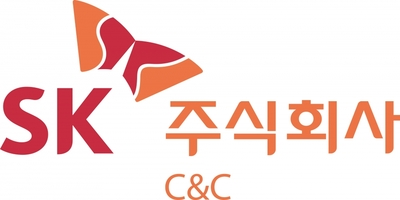
SK C&C
Hybrid Web APP팀 · 과장 · 기타SK 계열사 하이브리드 앱(Ionic 3 · Angular) 유지보수와 UI 개선
2019년 11월 ~ 2020년 02월
핵심
- REST API 연동과 Angular 데이터 바인딩 구조 수정
- 공통 UI 컴포넌트 적용과 다중 디바이스 대응
- 기기별 레이아웃·상태관리·인터랙션 보완
상세 업무 보기
SK 계열사 하이브리드 앱 유지보수 (Ionic 3 & Angular)
- Ionic 3 + Angular 기반의 하이브리드 WebApp 유지보수 및 UI 개선 작업 수행
- App 내 REST API 연동 및 Angular 데이터 바인딩 구조 수정
- 플랫폼 공통 UI 컴포넌트 적용 및 다중 디바이스 대응 최적화
- 기기별 레이아웃 대응, 상태관리 및 인터랙션 보완 중심 유지보수 수행

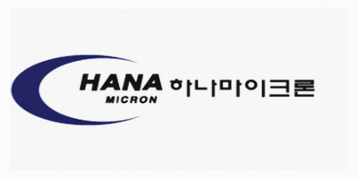
㈜하나마이크론
플랫폼개발그룹 · 선임연구원 · 기타스마트팩토리 웹 UI와 설비 데이터 차트 시각화
2019년 07월 ~ 2019년 11월
핵심
- Bootstrap 반응형 UI로 설비 상태·운영 정보를 한눈에 보이게 설계
- 외부 설비 API 연동, 실시간 데이터 바인딩과 에러 처리
- 가동률·수율 등 핵심 지표 차트 컴포넌트 설계
상세 업무 보기
스마트팩토리 웹 UI 구축
- Bootstrap 기반의 반응형 UI 설계 및 컴포넌트 단위 화면 구성
- 공장 설비 상태 및 운영 정보를 시각적으로 전달할 수 있도록 구조화된 UI 설계
- 운영 환경에 최적화된 사용자 인터페이스 제공
REST API 연계 및 실시간 데이터 바인딩
- 외부 설비 시스템과의 API 연동을 통해 실시간 데이터 연계
- API 응답 데이터를 기반으로 화면 내 각 요소에 동적 바인딩 처리
- 비동기 처리 및 에러 대응 로직 구성으로 시스템 안정성 확보
공장 운영 데이터 기반 차트 시각화 구현
- 설비별 상태, 수율, 가동률 등 주요 KPI 데이터를 시각화
- 사용자 UX를 고려한 차트 구성 및 구성 요소 커스터마이징
- 유지보수가 용이한 차트 컴포넌트 구조로 설계

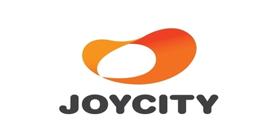
㈜조이시티
서비스개발팀 · 매니저 · 게임프리스타일·창세기전·오션앤엠파이어 등 상용 게임 공식 사이트 구축·운영
2017년 07월~ 2019년 06월
핵심
- 런칭·사전예약·이벤트 페이지를 다수 신규 제작
- 크로스브라우징·웹 접근성 대응, Parallax·모션 인터랙션
- 게임 공통 요소 템플릿화로 반복 제작 시간 단축
상세 업무 보기
다수의 상용 게임 웹사이트 구축 및 유지보수
- 프리스타일1/2/Z, 3on3, 오션앤엠파이어, 캐리비안의 해적, 워쉽배틀, 창세기전 등 조이시티 대표 게임 타이틀의 공식 웹사이트 구축 및 운영
- 브랜드 별 웹사이트 특성에 맞춘 반응형 설계 및 콘텐츠 구성
- 실시간 이벤트 페이지, 사전예약 페이지, 런칭 캠페인 등 신규 제작 다수 진행
웹 표준 및 접근성 기반 UI 구현
- 다양한 디바이스와 브라우저 대응을 고려한 크로스브라우징 대응
- 웹 접근성 준수를 기반으로 한 구조화 마크업 및 인터랙션 설계
- 인터랙티브한 사용자 경험을 위한 parallax scroll, animation motion 등 적용
운영 효율화를 위한 퍼블리싱 템플릿 정리
- 각 게임별 공통 요소 분리 및 템플릿화
- 반복 제작되는 페이지의 구조화로 작업 시간 단축 및 품질 유지
- 운영 중심 콘텐츠의 효율적 대응 환경 구성


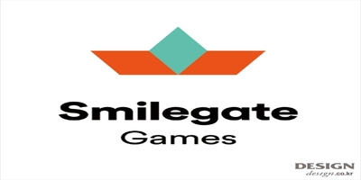
㈜스마일게이트
UI개발팀 · 프리랜서 · 게임테일즈런너·소울워커·크로스파이어 등 대형 게임 공식 사이트 구축
2016년 12월~ 2017년 06월
핵심
- 런칭·시즌 업데이트·사전예약·이벤트 페이지 제작, 신규 구축과 유지보수 병행
- CSS3·JavaScript 인터랙션: Parallax scroll, 트랜지션
- Bootstrap·Less 기반 반응형·접근성 레이아웃 구조화
상세 업무 보기
상용 게임 웹사이트 구축 및 유지보수
- 마블엔드타임아레나, 테일즈런너, 소울워커, 크로스파이어 등 대형 게임 타이틀의 공식 웹사이트 구축 및 운영
- 서비스 런칭, 시즌 업데이트, 사전예약, 이벤트 등의 마케팅 페이지 제작
- 신규 구축과 유지보수 업무를 병행하며 빠른 제작 및 품질 유지 경험 다수
CSS3 / JavaScript 기반 인터랙션 사이트 개발
- CSS3 및 JavaScript를 활용한 인터랙티브 모션 UI 구현
- 게임 특성에 맞춘 시각적 몰입도 높은 애니메이션 효과 적용
- Parallax scroll, 트랜지션, 인터랙션 요소 등 사용자 중심 기능 다수 설계
반응형 웹 및 접근성 대응 퍼블리싱
- PC/모바일 대응을 위한 반응형 웹 구조 설계
- 크로스브라우징 및 접근성 고려한 표준 마크업 구현
- Bootstrap, Less 활용한 레이아웃 시스템 및 UI 컴포넌트 구조화


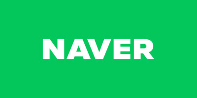
㈜네이버
서비스개발팀 · 매니저 · 커머스·포털네이버 예약 서비스 웹 유지보수와 운영
2016년 07월~ 2016년 11월
핵심
- 예약 관련 전 콘텐츠 유지보수, 서비스별 예약 플로우 UI·반응형·접근성
- Bootstrap + Less 공통 UI 모듈화, 크로스브라우징
- Gulp·Grunt 자동화 워크플로우, Git·SourceTree 협업
상세 업무 보기
네이버 예약 서비스 웹 유지보수 및 운영
- 네이버 내 `예약` 관련 전 콘텐츠 유지보수 및 기능 대응
- 서비스별 예약 플로우에 맞춘 UI 구성, 반응형 및 접근성 고려
- 퍼블리셔 중심으로 Angular 기반 구조 이해 및 협업
Bootstrap + Less 기반 UI 제작 환경 적용
- Bootstrap 레이아웃 기반 UI 구성 및 Less 프레임워크 활용한 스타일 관리
- 반응형 웹(RWD) 적용 및 크로스브라우징 대응
- 공통 UI 모듈화 및 유지보수 효율화 진행
최신 프론트엔드 빌드 환경 경험
- Gulp + Grunt 기반의 퍼블리싱 자동화 워크플로우 구성
- Node.js 및 Angular 기반 프론트엔드 구조 이해 및 환경 연동
- Git + SourceTree 기반 버전 관리 및 협업 체계 경험


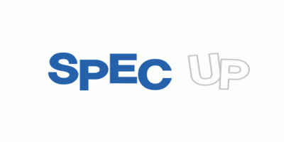
㈜스펙업애드
개발팀 · 대리 · 교육·뉴스위포트·토커비·씨씨앙 등 상용 사이트 리뉴얼과 퍼블리싱 가이드 수립
2016년 01월~ 2016년 07월
핵심
- UI 개편·구조 개선 퍼블리싱 전담, 반응형·접근성·표준 마크업
- HTML/CSS/JS 네이밍·폴더 구조 등 사내 규약 문서화
- 주니어 퍼블리셔 실무 교육과 기술 공유 세션 운영
상세 업무 보기
상용 웹사이트 리뉴얼 및 유지보수 (위포트, 토커비, 씨씨앙)
- 주요 상용 사이트의 UI 개편 및 구조 개선 퍼블리싱 전담
- 반응형 웹 구현 및 접근성·표준을 고려한 마크업 구조 설계
- 기획/디자인/개발 부서와 협업을 통한 페이지 전환 및 유지보수
사내 퍼블리싱 가이드 및 규약 문서화
- HTML/CSS/JS 네이밍, 폴더 구조, 컴포넌트 작성 기준 정리
- 협업 일관성을 위한 사내 퍼블리싱 규칙 수립 및 배포
- 코드 품질 향상을 위한 내부 리뷰 및 적용 사례 공유
퍼블리셔 인재 육성 및 기술 전파
- 주니어 퍼블리셔 대상 실무 교육 및 작업 가이드 제공
- 반복 이슈에 대한 대응법 정리 및 문서화로 팀 역량 향상
- 실무형 퍼블리셔 엔지니어 육성을 위한 기술 공유 세션 운영


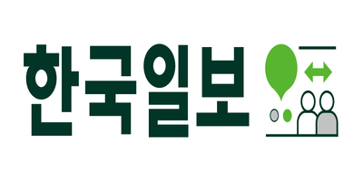
㈜한국일보
디지털뉴스부 · 프리랜서 · 교육·뉴스한국일보 웹사이트·동그라미 홈페이지 리뉴얼과 운영
2015년 06월~ 2015년 12월
핵심
- 섹션별 콘텐츠 구조 최적화와 사용자 흐름 중심 마크업
- 반응형 구조와 접근성 표준을 지킨 페이지 구현
- 퍼블리싱 가이드 정비, 반복 요소 템플릿화로 효율 향상
상세 업무 보기
한국일보 웹사이트 리뉴얼 및 유지보수
- 주요 뉴스 포털(한국일보)의 UI 개편 및 유지보수 퍼블리싱 담당
- 섹션별 콘텐츠 구조 최적화 및 사용자 흐름 개선 중심의 마크업 설계
- 반응형 웹 구조 설계 및 접근성 표준 준수 기반 페이지 구현
동그라미 홈페이지 개편 및 유지보수
- 콘텐츠 구성 재설계에 따른 화면 구조 변경 및 마크업 전체 리팩토링
- 지속적인 콘텐츠 업데이트 및 기능 대응 중심의 운영 퍼블리싱 수행
- 퍼블리싱 가이드 정비 및 반복요소 템플릿화로 유지보수 효율 향상


㈜하나로드림
포탈사업팀 · 사원 · 커머스·포털돈버는쇼핑 리뉴얼, 쇼핑백 앱·웹, 카카오톡 게임 연동 앱 퍼블리싱
2012년 12월~ 2013년 12월
핵심
- 쇼핑 흐름 개선 UX, 반응형 구조와 모듈 컴포넌트 설계
- 앱·웹 공통 UI 컴포넌트와 스크립트 인터랙션 구현
- 퍼블리싱–개발 협업을 위한 클래스 구조·가이드 제작
상세 업무 보기
돈버는쇼핑 서비스 리뉴얼 및 유지보수
- 기존 커머스 플랫폼 `돈버는쇼핑`의 UI 구조 개편 및 리뉴얼 퍼블리싱 담당
- 쇼핑 흐름 최적화를 위한 UX 개선, 반응형 구조 재정비, 모듈 단위 컴포넌트 설계
- 유지보수 기반의 콘텐츠 마크업 최적화 및 배너, 이벤트 UI 대응
쇼핑백 앱 및 웹 프로젝트 구축
- 동일 브랜드 앱/웹 통합 UI 전략에 따라 웹과 앱의 공통 UI 컴포넌트 설계
- 모바일 중심 UI 구성 및 스크립트 기반 인터랙션 구현
- 퍼블리싱-개발 연동을 위한 명확한 클래스 구조 및 협업 대응 가이드 제작
카카오톡 게임 친구 연동 앱 퍼블리싱
- 카카오 플랫폼 연동 구조에 맞춘 모바일 전용 앱 UI 퍼블리싱
- 다양한 해상도 및 디바이스 대응을 위한 반응형 설계 적용
- UI 구성요소 컴포넌트화 및 반복 요소 자동화 구조 설계


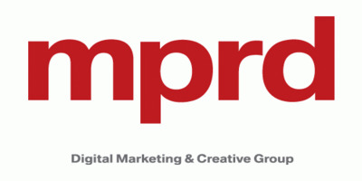
㈜mprd+
개발팀 · 사원 · 에이전시자동차·교육·식품·부동산·보험 등 다양한 브랜드 사이트 구축·운영
2011년 01월~ 2012년 02월
핵심
- 승용차없는날, 코란도스포츠, 이편한세상, 델몬트 등 다수 사이트
- 반응형·웹 표준·접근성을 지킨 시멘틱 마크업
- 캠페인·이벤트·프로모션 대응, 일정 조율·QA 경험
상세 업무 보기
다수의 브랜드 웹사이트 구축 및 유지보수
- 자동차, 교육, 식품, 부동산, 보험 등 다양한 산업군의 웹사이트 구축 및 운영
- 대표 프로젝트: 승용차없는날, 코엔, 코란도스포츠, 희망터치, 파비스, How to Play Smart, IG자동차손해사정, LIG이러닝센터, 카모메, 안드로이안스, 이편한세상, 델몬트, MPRD, 윤선생LMS, FUZ 등
- 각 브랜드 특성에 맞는 레이아웃, 디자인, 사용자 흐름 최적화를 고려한 UI 설계 및 퍼블리싱
콘텐츠 중심의 반응형 UI 및 접근성 적용
- 디바이스별 최적화된 반응형 웹 구현 및 콘텐츠 구조 설계
- 웹 표준 및 웹 접근성 준수를 기반으로 한 시멘틱 마크업 적용
- 반복 요소 템플릿화 및 유지보수 편의성을 고려한 컴포넌트화 구성
다양한 프로젝트 대응 경험을 통한 실무 퍼블리싱 노하우 확보
- 캠페인 페이지, 이벤트, 프로모션, 기업 사이트 등 다양한 유형의 프로젝트 대응
- 일정 조율, 이슈 대응, QA 및 커뮤니케이션 등 실무 중심 문제 해결 경험 다수


㈜브라이어스
개발팀 · 사원 · 에이전시공공기관·문화예술 사이트 구축과 웹접근성(WA) 인증 대상 프로젝트 수행
2009년 12월~ 2011년 01월
핵심
- 모바일Tworld, 국립발레단, 오페라페스티벌 등 사이트 구축
- 정보구조와 콘텐츠 전달 중심 UI, 관리자 페이지 퍼블리싱
- WA 인증을 위한 시멘틱 마크업·키보드 접근성·반복 QA
상세 업무 보기
공공기관 및 문화예술 사이트 구축 및 유지보수
- 모바일Tworld, 세계도시정보, POMA 우체국시설관리지원단, 국립발레단, 오페라페스티벌, 메타폴리스몰, RUTC선교, 성균관산업학단 등 다양한 분야의 웹사이트 구축
- 기관 및 문화 사이트 특성에 맞춘 정보구조 정비 및 콘텐츠 전달력 중심 UI 설계
- 관리자 페이지, 민간/공공 대상 서비스 페이지의 퍼블리싱 정리 및 유지보수 대응
웹접근성 인증마크 획득 대상 프로젝트 실무 수행
- WA 인증마크 획득을 위한 웹접근성 기준 적용 및 마크업 정비
- 대체 텍스트, 키보드 접근성, 논리적 구조 설계 등 전반적 시멘틱 마크업 수행
- 스크린리더 및 인증 도구 대응을 위한 반복 QA 및 오류 수정 작업 참여


사용 기술
기술 한눈에 보기
- 프론트엔드 (실무)
- 프론트엔드 (도구·템플릿으로 다룸)
- 언어 · 스타일
- 빌드 · 협업
- 데이터 · 모션
- 품질
- AI 자동화
더 궁금한 점이 있다면
프론트엔드와 AI 자동화 두 가지를 함께 확인해 보세요.